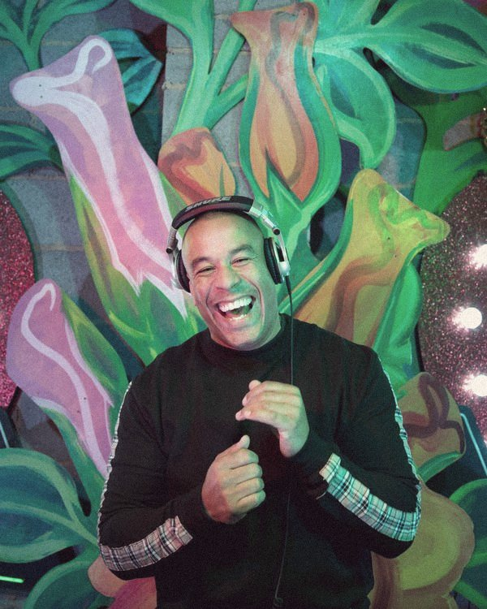
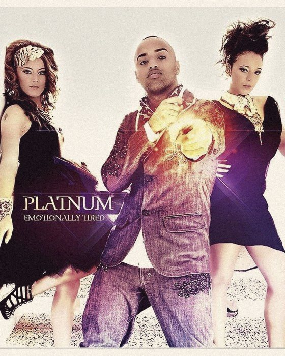
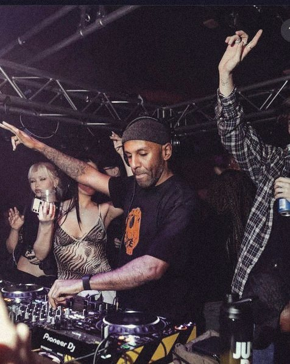
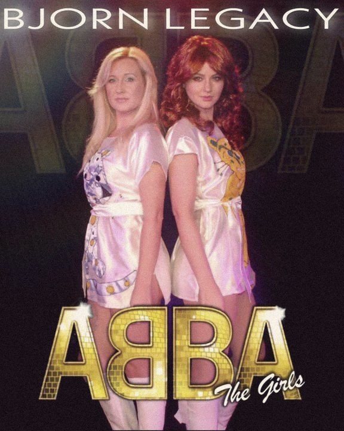

Mick Willow
Local talent
A highly respected DJ and tastemaker with deep roots in UK house culture, known for soulful, vocal-led sets that create euphoric dancefloors and feel-good musical storytelling.
World class
Local talent
A highly respected DJ and tastemaker with deep roots in UK house culture, known for soulful, vocal-led sets that create euphoric dancefloors and feel-good musical storytelling.
Local talent
Chart-topping artist and performer with global recognition, bringing star power, charisma and crowd-pleasing anthems, blending live performance with DJ-led party energy.
Local talent
A versatile DJ celebrated for smooth blends of soul, R&B, funk and party classics. A master of reading the room with high-energy yet refined sets for premium audiences.

Local talent
A dynamic DJ, host and crowd controller with over two decades of experience, specialising in vocal house, disco and party and urban anthems, on the decks and on the mic.
Local talent
A specialist in high-energy Afro and progressive house, trance and drum and bass. Matt Rubin is known for eclectic selections and crowd engagement, perfect for late-night moments.
Local talent
A trusted selector with strong roots in UK dance culture, delivering energetic, groove-driven sets that balance underground credibility with dancefloor-focused music.
Local talent
A creative force combining DJ performance with event production expertise, curating immersive musical experiences focused on atmosphere, flow and premium execution.
Local talent
A seasoned DJ and creative operator with a background in high-end events, providing seamless musical journeys tailored to luxury, corporate and private celebrations.
World class

International
One of the UK's most recognisable house DJs, delivering feel-good, hands-in-the-air sets packed with classic vocals and modern house energy.

International
Iconic UK garage legends behind timeless anthems, bringing nostalgia, vocal power and authentic UK club culture to any stage.

International
A defining voice of UK R&B and garage, with instantly recognisable hits that resonate across generations and high-impact live performance.
International
A respected house music collective known for deep, soulful, groove-driven sounds: authentic underground house with modern dancefloor appeal.
International
An internationally experienced DJ with a polished, versatile sound, known for sophisticated, high-energy sets across premium venues and festivals.
International
A house music veteran with decades behind the decks, blending classic house foundations with modern rhythms for timeless dancefloor moments.

International
A dynamic DJ and producer recognised for uplifting house sets, strong crowd connection and polished musicality.
International
A respected UK DJ and producer delivering soulful, groove-led house sets with underground credibility and global dancefloor appeal.
World class
as Robbie Williams
An electrifying tribute capturing the charisma, vocals and showmanship of Robbie Williams, hit after hit with big-stage energy.
as Whitney Houston
A soaring tribute to Whitney Houston, delivering the iconic power ballads and dancefloor classics with show-stopping vocals.
as Frank Sinatra
A timeless Frank Sinatra tribute bringing classic crooner style, swing standards and old-school glamour to the evening.

as ABBA
A vibrant ABBA tribute celebrating the iconic vocals, harmonies and glamour of the original group, with feel-good pop anthems.
as Tina Turner
A high-energy tribute delivering the powerhouse vocals, movement and iconic presence of Tina Turner.
as Taylor Swift
A polished tribute capturing the storytelling, vocals and eras of Taylor Swift in a dynamic pop experience.
as Katy Perry
A colourful, playful Katy Perry tribute packed with pop hits, costume changes and party energy.
Entertainment without limits
No set playlists or one-size-fits-all lineups: we match talent, sound and style to your space and design a musical journey that builds all night.
Enquire about talent